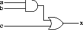

Writing Circuit Specifications
[
Up to index
]
This section describes the circuits that operate on individual bits, including basic logic gates and basic building blocks.
x = or2 (and2 a b) c a b c
